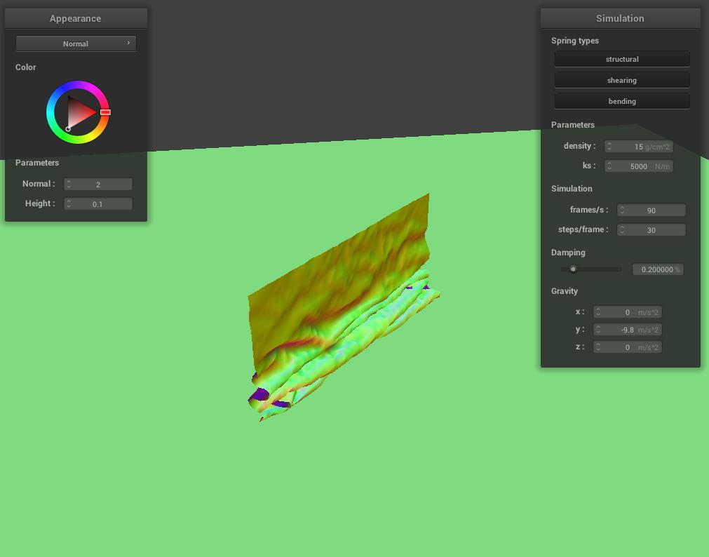

Overview
In this assignment, I implemented a real-time simulation of cloth using a mass and spring based system. I built the data structures to discretely represent the cloth, define and apply physical constraints on them, and apply numerical integration to simulate the way cloth moves over time. Finally, I implemented collisions with other objects as well as self-collisions to prevent cloth clipping.
Part I: Masses and springs
The images below show what the wireframe looks like (1) without any shearing constraints, (2) with only shearing constraints, and (3) with all constraints.
|
|
|
|
Part II: Simulation via numerical integration
Experiment with some the parameters in the simulation.
For spring constant ks, the cloth takes shorter time to rest and looks stiff with high ks while with low ks, the cloth takes longer time to rest and looks softer.

|
|
For density, the cloth takes shorter time to rest and looks stiff with low density, while with high density, the cloth takes longer time to rest and looks softer.

|
|
For damping, the cloth takes comes to rest slowly without oscillating with high damping, while with low damping, the cloth oscillates several times before coming to rest.
|
|
|
below is a screenshot of my shaded cloth from scene/pinned4.json in its final resting state.
|
|
Part III: Handling collisions with other objects
Below shows screenshots of my shaded cloth from scene/sphere.json in its final resting state on the sphere using the default ks = 5000 as well as with ks = 500 and ks = 50000.
As showen below, the cloth looks stiff when k is high. When k gets lower, the cloth becomses softer and streches more due to gravity.
|
|
|
|
Below shows a screenshot of my shaded cloth lying peacefully at rest on the plane.
|
|
Part IV: Handling self-collisions
Below shows screenshots that document how your cloth falls and folds on itself, starting with an early, initial self-collision and ending with the cloth at a more restful state
|
|

|
|
Vary the density as well as ks and describe with words and screenshots how they affect the behavior of the cloth as it falls on itself.
When density is large and ks is small, the cloth looks more wrinkled, and as it falls flat, it is undulating. In contrast, when the density is low and ks is high, the cloth looks stiff and it rests more peacefully after falling flat.
Part V: Cloth Sim
Explain in your own words what is a shader program and how vertex and fragment shaders work together to create lighting and material effects.
A shader program is a small program that runs on the GPU and is responsible for generating fragment shaders
or transforming vertex positions during the rendering process.
vertex shaders are responsible for transforming vertices, while fragment shaders determine the color of each pixel based
on lighting models, material properties, and other factors, and together, they create the desired lighting and material effects
Explain the Blinn-Phong shading model in your own words. Show a screenshot of your Blinn-Phong shader outputting only the ambient component, a screen shot only outputting
The Blinn-Phong shading model provides a more computationally efficient and visually appealing way to simulate lighting and shading effects on 3D surfaces. By using the halfway vector, the Blinn-Phong model simplifies the computation of specular highlights while still producing visually appealing results. As a result, Blinn-Phong shading model balances between computational efficiency and visual quality.